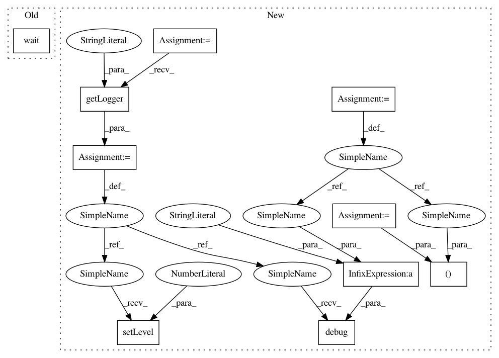

c6a526f0966c0bd609904d5edc3d530bee4b21b7,studio/tests/remote_worker_test.py,RemoteWorkerTest,test_remote_worker,#RemoteWorkerTest#,24
Before Change
expected_output="[ 2. 6.]",
queue=PubsubQueue(queue_name))
pw.wait()
@timeout(300)
@unittest.skipIf(True or
"GOOGLE_APPLICATION_CREDENTIALS" not in
After Change
def test_remote_worker(self):
experiment_name = "test_remote_worker_" + str(uuid.uuid4())
queue_name = experiment_name
logger = logging.getLogger("test_remote_worker")
logger.setLevel(10)
pw = subprocess.Popen(
["studio-start-remote-worker", queue_name, "1"],
stdout=subprocess.PIPE,
stderr=subprocess.STDOUT)
stubtest_worker(
self,
experiment_name=experiment_name,
runner_args=["--queue=" + queue_name, "--force-git"],
config_name="test_config.yaml",
test_script="tf_hello_world.py",
script_args=["arg0"],
expected_output="[ 2. 6.]",
queue=PubsubQueue(queue_name))
workerout, _ = pw.communicate()
logger.debug("studio-start-remote-worker output: \n" + workerout)
@timeout(90)
@unittest.skipIf(
"GOOGLE_APPLICATION_CREDENTIALS" not in
In pattern: SUPERPATTERN
Frequency: 3
Non-data size: 10
Instances
Project Name: studioml/studio
Commit Name: c6a526f0966c0bd609904d5edc3d530bee4b21b7
Time: 2017-07-06
Author: peter.zhokhov@sentient.ai
File Name: studio/tests/remote_worker_test.py
Class Name: RemoteWorkerTest
Method Name: test_remote_worker
Project Name: studioml/studio
Commit Name: c6a526f0966c0bd609904d5edc3d530bee4b21b7
Time: 2017-07-06
Author: peter.zhokhov@sentient.ai
File Name: studio/tests/remote_worker_test.py
Class Name: RemoteWorkerTest
Method Name: test_remote_worker_co
Project Name: studioml/studio
Commit Name: c6a526f0966c0bd609904d5edc3d530bee4b21b7
Time: 2017-07-06
Author: peter.zhokhov@sentient.ai
File Name: studio/tests/remote_worker_test.py
Class Name: RemoteWorkerTest
Method Name: test_remote_worker_c